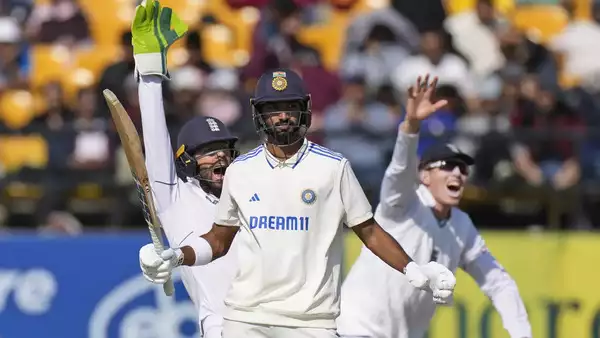

Let us see the highlighted news of today
Today's Flash News
Former British PM Theresa May to stand down at next election.
Former British Prime Minister Theresa May announces she won't seekre-election to Parliament,signaling departure from frontline politics.May,who became PM in 2016 amid Brexit turmoil,cities increasing focus on global issues. Her tenure was marked by struggles to deliever Brexit,leading to tearful resignation in 2019.She remains MP to Maidenhead LONDON: Former British Prime Minister Theresa May will not stand for re-election to parliament,she said on Friday,becmoing the latest member of the governing Conservative Party to signal their departure from frontline politics later this year. May became prime minister in 2016 after then-leader David Cameron quit in the wake of Britain's shock vote to leave the Eurpean Union
PM Modi to launch 15 airport projects today. Which are the new terminals?

Prime Minister Narendra Modi is set to inaugurate and lay the foundation stones for 15 airport projects, including 12 new terminal buildings, during his visit to Azamgarh, Uttar Pradesh, on Sunday.
Union civil aviation minister Jyotiraditya Scindia announced that the project worth over ₹42,000 crore will be inaugurated. The projects include virtual inaugurations and foundation stone laying for 15 airports nationwide, with a total investment exceeding ₹9,800 crore.
Which new airport projects will be launched? Inauguration of new terminal buildings at: 1. Pune Airport 2. Kolhapur Airport
Sports
India vs England Live Score, 5th Test Day 2: India lose Dhruv Jurel and Ravindra Jadeja in quick succession

India vs England Live Score, 5th Test Day 2: England skipper Ben Stokes struck on his first delivery since knee surgery and fellow quick James Anderson moved to 699 wickets but India extended their lead to 158 in the fifth Test on Friday.
India were 376-3 at tea on day two in response to England's 218 with debutant Devdutt Padikkal, on 44, and Sarfaraz Khan, on 56, batting at the break at the picturesque Dharamsala stadium.
Stokes dispatched his Indian counterpart Rohit Sharma for 103 with a delivery that seamed off the pitch to rattle the batsman's off stump in the second over after lunch.
It ended a charging 171-run second-wicket stand with fellow centurion Shubman Gill after India resumed the day on 135-1.
Stokes' superb bowling return after eight months and a knee surgery last November lifted England spirits with the right-arm seamer on target right away.
He bowled five overs for 17 runs including a maiden before retreating to field for the rest of an afternoon session dominated by the Indian batsmen.
Anderson got one to nip back in and bowled Gill on 110.
The 41-year-old is one shy of becoming the third bowler to take 700 Test wickets, after Sri Lanka's Muttiah Muralitharan (800) and the late Australian great Shane Warne (708).
Left-handed Padikkal impressed with regular boundaries and Sarfaraz, playing his third Test, overcame a cautious start to raise a 55-ball fifty with a boundary off Shoaib Bashir.
Earlier Rohit, who surived a dropped catch by Zak Crawley on 68, raised his second ton of the series with a single off Tom Hartley to a standing ovation from the crowd.
Gill got to his hundred two balls later in the next over with a boundary off Bashir as he took a bow and doffed his cap to all corners.
Know More
Let us see the best cricket players records
| Players | Runs Scored | Nationality |
| Virat Kholi | 20000 | India |
| Kane Williamson | 13000 | New Zealand |
| Steve Smith | 10000 | Australia |
| Joe Root | 9000 | England |
| Babar Azam | 7000 | Pakistan |
World
U.S. destroyer shoots down missile and drones launched by Yemen's Houthi rebels
A U.S. destroyer shot down drones and a missile launched by Yemen's Houthi rebels toward it in the Red Sea, officials said Wednesday, as the Indian navy released images of it fighting a fire aboard a container ship earlier targeted by the Houthis. The assault Tuesday apparently targeted the USS Carney, an Arleigh Burke-class destroyer that has been involved in the American campaign against the rebels, who have launched attacks over Israel's war against Hamas in the Gaza Strip. The Houthi attack involved bomb-carrying drones and one anti-ship ballistic missile, the U.S. military's Central Command said.
The assault Tuesday apparently targeted the USS Carney, an Arleigh Burke-class destroyer that has been involved in the American campaign against the rebels, who have launched attacks over Israel's war against Hamas in the Gaza Strip.
The Houthi attack involved bomb-carrying drones and one anti-ship ballistic missile, the U.S. military's Central Command said.
The U.S. later launched an airstrike destroying three anti-ship missiles and three bomb-carrying drone boats, the Central Command said. Brig. Gen. Yahya Saree, a Houthi military spokesperson, acknowledged the attack, but claimed its forces targeted two American warships, without elaborating.
General
Why a 22-year-old student in Pakistan has been sentenced to death over Whatsapp post
A court in Pakistan has sentenced a 22-year-old student to death for reportedly sharing photos and videos containing derogatory words about Prophet Muhammad and his wives on WhatsAp
A 17-year-old was also sentenced to life imprisonment as part of the same case. As per a report by BBC, the two have been punished on charges of blasphemy over Whatsapp messages, which a court in Punjab Province said that the blasphemous pictures and videos were shared with the intention to outrage the religious feelings of Muslims.
Know MoreMukesh Ambani says Shah Rukh Khan is Anant’s ‘godfather’ as he introduces SRK at pre-wedding bash.
Anant Ambani and Radhika Merchant’s pre-wedding festivities concluded on Thursday. The Ambani family hosted Bollywood celebrities such as Shah Rukh Khan and his family, Salman Khan, Deepika Padukone and Ranveer Singh, global business tycoons such as Bill Gates, Mark Zuckerberg, the Adanis, and more. While Rihanna’s performance kick-started the celebrations, it was SRK, Aamir Khan and Salman Khan‘s performance that enthralled all the guests. Several videos from the three-day function have surfaced on social media. In one video that recently appeared online, Mukesh Ambani addresses his guests and welcomes SRK on stage by sharing how close the actor is to his family. He is heard saying, “Since Anant was a boy, he has had a godfather,’ Mukesh then his wife, Nita, to invite SRK on stage.
Know MoreIndia signs $100bn free trade deal with European EFTA bloc
India has signed a $100bn free trade agreement with a four-member European bloc and will lift most import tariffs on industrial products from these countries in return for the investment over 15 years. The deal signed on Sunday with the European Free Trade Association (EFTA) – after several rounds of negotiations spanning 16 years – will see investments across a range of Indian sectors, including pharmaceuticals, machinery and manufacturing.
The EFTA comprises Switzerland, Norway, Iceland, and Liechtenstein, all non-European Union nations, that will get access to a fast-growing market of 1.4 billion people, said India’s Minister for Commerce and Industry Piyush Goyal.
Know More